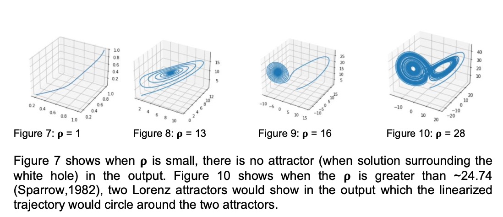
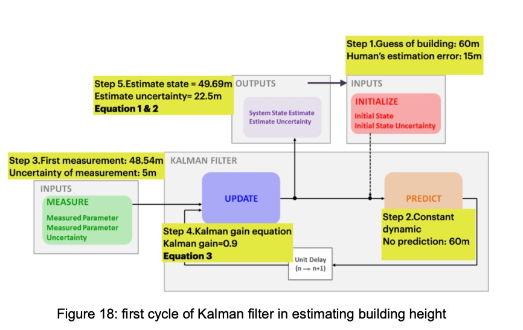
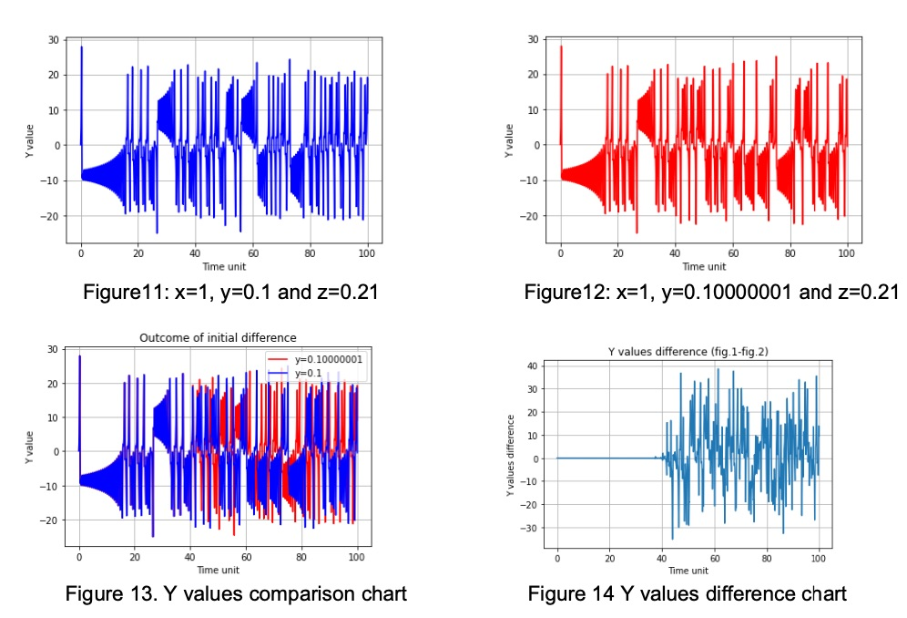
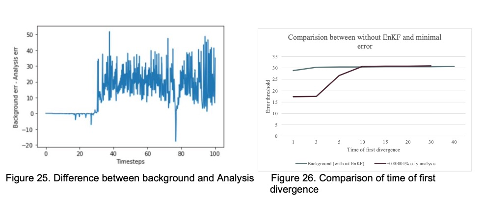
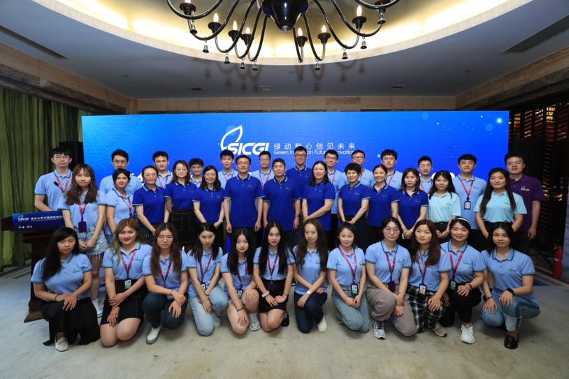
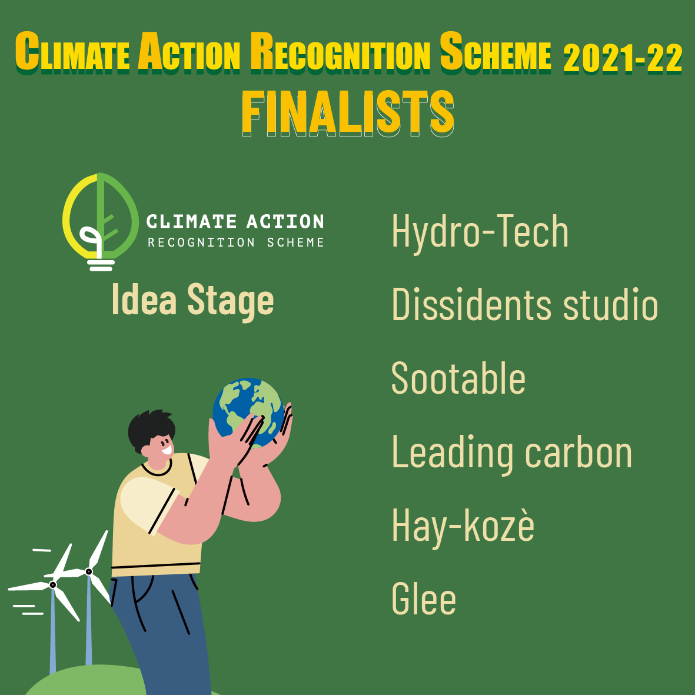
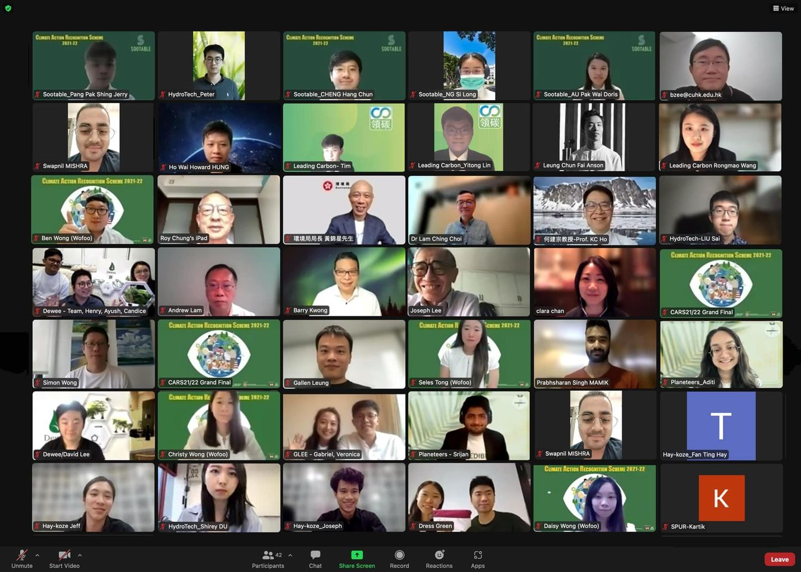

Projects
Data Assimilation in Lorenz Model by applying Kalman Filter
This is the Final Year Project of my Bachelor degree supervised by Prof Julian MAK . The project aims to explore one of the typical data assimilations called the Kalman filter. Data assimilation is commonly applied in the prediction of meteorology, climate science, weather forecasts, and ecology. In the project, Kalman filter is applied to solve the initial condition problem of prognostic variables in the Lorenz system or as known as Butterfly effect.
 Predictions based on a set of initial condition with uncertainties is not reliable after certain time in a chaotic system. The intention of this FYP is to mitigate the initial condition error in the Lorenz system by applying the data assimilation technique. The ensemble Kalman filter was the chosen tool to mitigate the problem. We compare with and without the application of EnKF, variations in initial conditions, observation frequency, and ensemble sizes to understand the mechanism of EnKF.
 After the experiment, we found out EnKF could correct the initial condition of the Lorenz system even with large initial condition error(+200%) because we have the perfect model in the Lorenz system.Therefore, the constanly taking obersvations could track the trajectory back to the truth. In addition, large ensemble size and short observation interval could improve the performance of EnKF.
*Some of Python code was adapted from "PyDA: A Hands-On Introduction to Dynamic Data Assimilation with Python" (Ahmed et al., 2020). Readers could find useful information on the explanation of Jacobian and linear tangent linear model from the paper. If you want the full report, send me an email.Leading Carbon 領碳
Summer Institute For China's Green Innovators Tsinghua University | Apple
Supported by Ministry of Ecology and Environment of the People's republic of China, Suumer Institue for China's Green Innovators (SCIGI) was cofounded by Tsinghua University and Apple, which aims to cultivate the young leadrers with string awareness of enivronmental innovation to confront the challenges of green transforamtion and technological revolution. I found my best teammates in SCIGI and we learn and explore various aspects of environment and innovation. Here is what we have done in SCIGI:
China has done a lot of exploration and practice in low-carbon product certification and environmental labeling, but the types of certification and labeling to reflect the carbon footprint of products and guide the public to low-carbon consumption and application scenarios are not common. The team is committed to the concept of "every consumption choice you make has an impact on the earth" in the research of low-carbon product labeling. The current carbon labeling and certification system has a low universal rate of calculation, non-consumer oriented presentation, and the promotion of labeling is hampered, which restricts all parties concerned from promoting low-carbon consumption to help double carbon goals.
After comprehensive theoretical research, information collection and research in government departments, enterprises, social organizations, frontline community platforms and consumers, the team launched our green innovation solution: the visual product carbon factor label. The label takes into account the market situation, and balances simplicity of calculation and comprehensiveness of presentation to fully demonstrate the efforts of products in reducing carbon emissions.

The label adopts a "low carbon indicator + key weight" approach, selecting personal computers (microcomputers) as the pilot product to calculate the product low carbon index, and presenting the professional low carbon production practices to consumers in a visual way. Based on this, we establish an information platform with low carbon index as the 2 core to promote the use of the carbon factor label. This carbon factor label realizes the visual perception of consumers, which in turn promotes the low-carbon consumption behavior of the public and gives positive feedback to enterprises for low-carbon transformation, thus leveraging the systemic change of low-carbon production and life in the economy and society. my team Leading Carbon won the First Price of The 6th China's Green Innovation Competition.
Climate Action Recognition Scheme held by Hong Kong SDG Hub
After 3 months of research and study in Tsinghua, our team carry Leading Carbon to Hong Kong. We participates a start-up competition called Climate Action Recognition Scheme held by Hong Kong SDG Hub and Wofoo group, supported by HKSTP. We are one of the 6 finalist of scheme. Hong Kong SDG Hub is honored to invite Mr. Kam-sing Wong, the Secretary for the Environment, and other industry high achievers to be the judges of the Grand Final of Climate Action Recognition Scheme 21/22.
  >